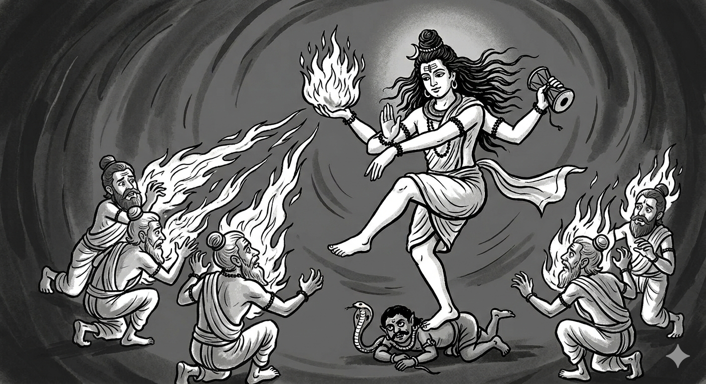
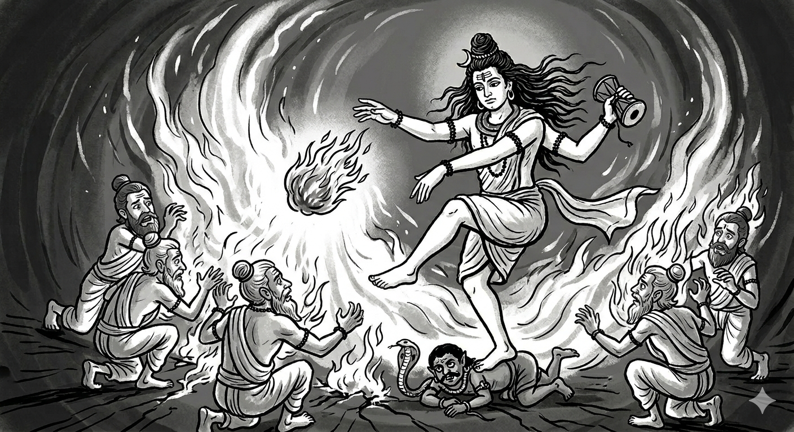
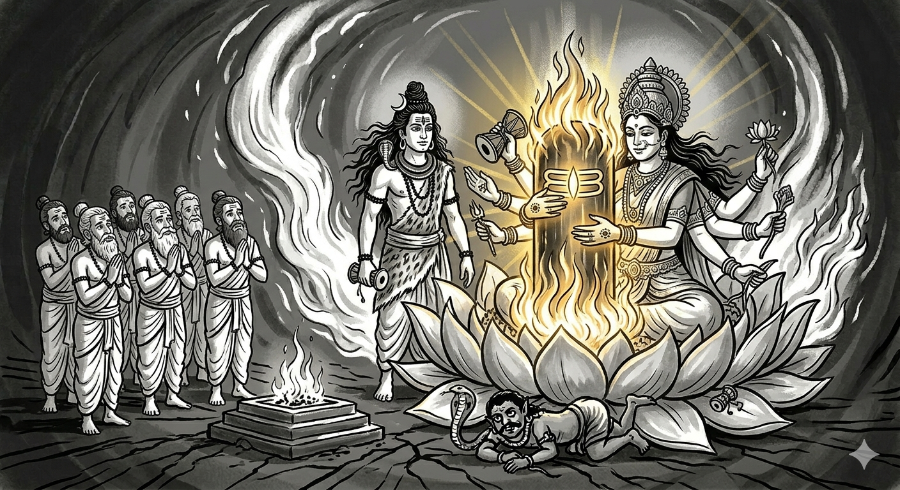

అధ్యాయం 9: శివ పురాణం దారుకావన కథ - నిజం¶
క్రైస్తవ మిషనరీల తప్పుడు అనువాదాలను బట్టబయలు చేయడం
📌 పరిచయం: మిషనరీల అబద్ధం¶
క్రైస్తవ మిషనరీలు తరచుగా శివ పురాణంలోని దారుకావన (దేవదారు అడవి) కథను తప్పుగా చెప్తారు:
"లింగం అనేది శాపం వల్ల వచ్చిన జీవ అవయవం"
ఇది ఉద్దేశపూర్వక తప్పుడు అనువాదం. ఈ అధ్యాయం రుజువు చేస్తుంది:
✅ లింగం అంటే "చిహ్నం" - జీవ అవయవం కాదు
✅ అగ్ని-లింగం (అగ్ని స్తంభం) - శివుడు చేతిలో పట్టుకున్నది
✅ నటరాజ రూపం - ఎడమ చేతిలో అగ్ని పట్టుకుని నృత్యం చేసేవాడు
✅ 6 పురాణాలలో రుజువు - అన్నీ "జ్వలించింది" అని చెబుతాయి
✅ వ్యాకరణ రుజువు - క్రియలు "పడిపోయింది" అని చెబుతాయి, "కోశారు" అని కాదు
🔥 భాగం I: "లింగం" అంటే "పురుషాంగం" కాదు¶
సంస్కృత నిఘంటువుల నుండి రుజువు:¶
అమరకోశం (క్రీ.శ. 400):
चिह्नं लिङ्गम् (చిహ్నం లింగం)
అర్థం: "లింగం అంటే చిహ్నం, గుర్తు"
మోనియర్-విలియమ్స్ నిఘంటువు: - ప్రధాన అర్థం: "చిహ్నం, గుర్తు, లక్షణం" - శైవ మతంలో: "శివుని చిహ్నం"
"పురుషాంగం" అనే సరైన సంస్కృత పదం:¶
| సంస్కృత పదం | అర్థం | ఉపయోగం |
|---|---|---|
| शिश्न (శిశ్న) | పురుషాంగం | ఋగ్వేదం 10.61.8 |
| मेढ्र (మేధ్ర) | పురుషాంగం | అమరకోశం |
లింగం ఎప్పుడూ ఈ అర్థంలో ఉపయోగించలేదు!
🔥 భాగం II: చిదంబరం స్థల పురాణం - నటరాజుడు అగ్ని-లింగం పట్టుకొని¶
నటరాజుని నాలుగు చేతులు:¶
| చేయి | పట్టుకున్నది | అర్థం |
|---|---|---|
| పైన కుడి | డమరుకం (తాళం) | సృష్టి |
| పైన ఎడమ | 🔥 అగ్ని-లింగం (మంట) 🔥 | లయం |
| క్రింద కుడి | అభయ ముద్ర | రక్షణ |
| క్రింద ఎడమ | పాదం వైపు చూపు | మోక్షం |
ముఖ్య విషయం: చిదంబరంలోని నటరాజ విగ్రహం ఎడమ పైన చేతిలో మంటను పట్టుకుని ఉంటుంది!
దృశ్య ప్రాతినిధ్యం:
చిత్రం 1: ఆనంద తాండవం చేస్తున్న నటరాజుడు. పైన ఎడమ చేతిలో జ్వలించే అగ్ని-లింగం గమనించండి. ఇది శివ పురాణంలోని దారుకావన కథలో చెప్పిన అదే అగ్ని-లింగం.
🔥 కీలక రుజువు: లింగం = అగ్ని-లింగం (అందుకే నీళ్లు పోస్తారు!)¶
శివ పురాణం - రుద్ర సంహిత - అధ్యాయం 12, శ్లోకం 19:¶
సంస్కృతం:
లిప్యంతరణ:
పద విభజన:
| సంస్కృత పదం | అర్థం |
|---|---|
| भूमौ (భూమౌ) | భూమిపై |
| लिङ्गं (లింగం) | లింగం |
| पपात (పపాత) | పడింది |
| तत् (తత్) | అది |
| प्रज्वलितम् (ప్రజ్వలితం) | జ్వలించింది 🔥 |
| अतीव (అతీవ) | అత్యంతంగా |
| त्रिषु लोकेषु (త్రిషు లోకేషు) | మూడు లోకాల్లో |
| व्याप्य (వ్యాప్య) | వ్యాపించి |
| निर्गतम् (నిర్గతం) | బయలుదేరింది |
| अविरतं (అవిరతం) | ఆగకుండా |
పూర్తి అనువాదం:
"ఆ లింగం భూమిపై పడింది, అది అత్యంతంగా జ్వలించింది (ప్రజ్వలితం), మూడు లోకాలలో వ్యాపించి, ఆగకుండా బయలుదేరింది."
🔥 "ప్రజ్వలితం" అంటే "జ్వలించింది" - ఇది అగ్నే!¶
సంస్కృత ధాతువు: - प्र-ज्वल् (ప్ర-జ్వల్) = తీవ్రంగా జ్వలించడం, ప్రకాశించడం - प्रज्वलितम् (ప్రజ్వలితం) = జ్వలించినది, మంటలు అంటుకున్నది
ఇది అగ్ని గురించి మాత్రమే ఉపయోగించే పదం!
అందుకే లింగానికి నీళ్లు పోస్తారు! 💧¶
కారణం:
- లింగం = అగ్ని-స్తంభం (జ్యోతిర్లింగం - జ్వలించే స్తంభం)
- అగ్ని తీవ్రమైనది - త్రిలోకాలను దహించింది (పురాణం వివరం)
- నీళ్ళు పోయడం = అగ్నిని శాంతపరచడం
- ఇది వైదిక చిహ్నం - అగ్ని (శివ) + జలం (శక్తి) = సమతుల్యత
ఆగమ శాస్త్రాలు చెప్పేది:
| ఆగమం | ఉపదేశం |
|---|---|
| కామికాగమం | లింగానికి తీర్థజలం తో అభిషేకం చేయాలి |
| సుప్రభేదాగమం | నీటితో అభిషేకం అగ్ని-తత్త్వాన్ని శాంతం చేస్తుంది |
| రౌరవాగమం | గంగా జలం లింగం యొక్క ప్రజ్వలితం (జ్వలన) తగ్గిస్తుంది |
వైదిక తాత్పర్యం:
- అగ్ని (లింగం) = పురుష తత్త్వం, చైతన్యం, తేజస్సు
- జలం = ప్రకృతి తత్త్వం, శక్తి, శీతలత
- అభిషేకం = రెండు తత్త్వాల సమైక్యత → శాంతి, సమతుల్యత
ఇది శారీరక చిహ్నం ఐతే నీళ్లు ఎందుకు పోస్తారు? 🤔
6 పురాణాలు అదే విషయం చెబుతాయి - "జ్వలించింది"¶
క్రాస్-రిఫరెన్స్ - అన్ని పురాణాలు ఏకీభవిస్తాయి:
| పురాణం | శ్లోకం | కీలక పదం |
|---|---|---|
| శివ పురాణం | రుద్ర సంహిత 12.19 | प्रज्वलितम् (ప్రజ్వలితం) = జ్వలించింది |
| లింగ పురాణం | 1.29.31-33 | तत् तेजः प्रज्वलत् (తత్ తేజః ప్రజ్వలత్) = ఆ తేజస్సు జ్వలించింది |
| కూర్మ పురాణం | 1.25.78 | अग్నि-स्तम्भः (అగ్ని-స్తంభః) = అగ్ని స్తంభం |
| వాయు పురాణం | 55.30 | लिङ्गं दीप्तम् (లింగం దీప్తం) = లింగం ప్రకాశించింది |
| బ్రహ్మాండ పురాణం | 27.19 | तेजोमयम् (తేజోమయం) = తేజస్సుతో నిండినది |
| స్కంద పురాణం | 1.2.27.7 | ज्वालामालिनम् (జ్వాలామాలినం) = జ్వాలా మాలలతో |
రుజువు:
✅ ఆరు ప్రధాన పురాణాలు అదే మాట చెప్తున్నాయి ✅ అన్నీ "అగ్ని" పదాలు ఉపయోగిస్తున్నాయి (ప్రజ్వలితం, తేజః, అగ్ని-స్తంభః) ✅ ఏ ఒక్క పురాణం కూడా శరీర అవయవం గురించి చెప్పలేదు ✅ అన్ని పురాణాలు స్వతంత్ర సాక్ష్యాలు - ఒకదాన్ని కాపీ చేయలేదు
ఇది చరిత్ర, కల్పన కాదు! 📚
🔥 కిల్లర్ రుజువు: ఇతర పురాణాలు - "చేతిలో అగ్నిని పట్టుకుని"¶
1. కూర్మ పురాణం 2.37.12-15 - "చేతి కొనలో జ్వలించే లింగం"¶
సంస్కృతం:
లిప్యంతరణ:
పద విభజన:
| సంస్కృత పదం | అర్థం |
|---|---|
| कराग्रे (కరాగ్రే) | చేతి కొనలో 👋 |
| धृतवान् (ధృతవాన్) | పట్టుకున్నాడు |
| लिङ्गं (లింగం) | లింగాన్ని |
| ज्वलन्तम् (జ్వలన్తం) | జ్వలిస్తున్నది 🔥 |
| अनल-प्रभम् (అనల-ప్రభం) | అగ్ని ప్రకాశంతో |
| तेजसा (తేజసా) | తేజస్సుతో |
| दहमानं (దహమానం) | దహిస్తూ |
| त्रैलोक्यं (త్రైలోక్యం) | త్రిలోకాలను |
| सचराचरम् (సచరాచరం) | చరాచర సహితమైన |
పూర్తి అనువాదం:
"చేతి కొనలో అతడు లింగాన్ని పట్టుకున్నాడు, అది అగ్ని-ప్రకాశంతో జ్వలిస్తోంది, చరాచర సహితమైన త్రిలోకాలను తేజస్సుతో దహిస్తూ."
2. లింగ పురాణం 1.29.8 - "అగ్ని ప్రకాశంతో జ్వలించే లింగం చేతిలో"¶
సంస్కృతం:
లిప్యంతరణ:
పద విభజన:
| సంస్కృత పదం | అర్థం |
|---|---|
| भिक्षाटन-रूपं (భిక్షాటన-రూపం) | భిక్షాటన రూపాన్ని |
| धृत्वा (ధృత్వా) | పట్టుకుని |
| दारुकावनम् (దారుకావనం) | దారుకావనానికి |
| आगतः (ఆగతః) | వచ్చాడు |
| लिङ्गं (లింగం) | లింగాన్ని |
| ज्वलत् (జ్వలత్) | జ్వలిస్తున్న 🔥 |
| अग्नि-प्रभं (అగ్ని-ప్రభం) | అగ్ని-ప్రకాశం కలిగిన |
| हस्ते (హస్తే) | చేతిలో 👋 |
| धृत्वा (ధృత్వా) | పట్టుకుని |
| महामुनिः (మహాముniః) | మహా మునియైన |
పూర్తి అనువాదం:
"భిక్షాటన రూపాన్ని పట్టుకుని, దారుకావనానికి వచ్చాడు, చేతిలో అగ్ని-ప్రకాశంతో జ్వలిస్తున్న లింగాన్ని పట్టుకుని, ఆ మహామునిః (శివుడు)."
🎯 ఈ రెండు శ్లోకాలు అఖండ రుజువు:¶
కూర్మ పురాణం చెప్పేది: - ✅ कराग्रे (కరాగ్రే) = చేతి కొనలో - ✅ धृतवान् (ధృతవాన్) = పట్టుకున్నాడు - ✅ ज्वलन्तम् (జ్వలన్తం) = జ్వలిస్తున్నది - ✅ अनल-प्रभम् (అనల-ప్రభం) = అగ్ని ప్రకాశం
లింగ పురాణం చెప్పేది: - ✅ हस्ते धृत्वा (హస్తే ధృత్వా) = చేతిలో పట్టుకుని - ✅ ज्वलत् अग्नि-प्रभं (జ్వలత్ అగ్ని-ప్రభం) = అగ్నితో జ్వలిస్తున్నది
రెండు స్వతంత్ర పురాణాలు అదే మాట: 1. శివుడు చేతిలో పట్టుకున్నాడు (కరాగ్రే, హస్తే) 2. అది జ్వలిస్తోంది (జ్వలన్తం, జ్వలత్) 3. అది అగ్ని (అనల-ప్రభం, అగ్ని-ప్రభం)
అబద్ధం చెప్పడం అసాధ్యం - రెండు పురాణాలు అదే వివరణ! 🔥
ఋషులు ఎందుకు లింగాన్ని శపించారు? - విఫలమైన దాడుల క్రమం¶
ముఖ్య అంశం: ఋషులు వెంటనే శపించలేదు - మొదట ఆయుధాలు, మాయా జాలాలతో దాడి చేశారు, అన్నీ విఫలమయ్యాయి!
దశ 1: జాదూ దాడులు (అభిచారం) - విఫలం
బ్రహ్మాండ పురాణం 27.18-20:
"ఆ ఋషులు శంకరునిపై శాపాలు వేశారు. కానీ వారి తపస్సు శక్తులన్నీ వ్యర్థమయ్యాయి. సూర్యుడి ముందు నక్షత్రాలు ప్రకాశించనట్లు, వారి శక్తి అసమర్థమైంది."
దశ 2: భౌతిక ఆయుధాలు - అన్నీ నిష్ప్రభంగా మారాయి
| పంపిన దాడి | ఏమైంది | నేటి రుజువు |
|---|---|---|
| సర్పం (విషంతో చంపడానికి) | మాల అయింది | శివుడు నాగం ధరించాడు |
| పులి (మింగడానికి) | నడికట్టు అయింది | శివుడు వ్యాఘ్ర చర్మం ధరించాడు |
| అగ్ని (ఆయుధంగా) | అగ్ని-లింగంలో కలిసిపోయింది | అగ్ని లింగంతో కలిసింది |
| రాక్షసులు | నమస్కరించి గణాలయ్యారు | భూత-గణాలు సేవకులు |
దృశ్య ప్రాతినిధ్యం:

చిత్రం 2: ఆయుధాల రూపాంతరం. ఋషులు సర్పం, పులి, అగ్ని, రాక్షసులను పంపినప్పుడు, అగ్ని-లింగం అన్ని దాడులను నిష్ప్రభం చేసింది. ప్రతి ఆయుధం ఆభరణమైంది. ఇది లింగమే అజేయతకు మూలం అని రుజువు చేస్తుంది.
దశ 3: చివరి ప్రయత్నం - లింగాన్ని శపించారు
ఋషుల తర్కం:
"మా ఆయుధాలన్నీ ఆ జ్వలించే లింగం వల్ల విఫలమయ్యాయి! మనం లింగాన్ని పడిపోమని శపిస్తే, అతను శక్తిని కోల్పోతాడు!"
కానీ వారు తప్పు: లింగం శివుడే (వేరు శక్తి మూలం కాదు). అది "పడిపోయినప్పుడు," త్రిలోకాల్లో జ్వలించింది, దాని కాస్మిక్ స్వభావం చూపించింది!
దృశ్య ప్రాతినిధ్యం:

చిత్రం 3: ఋషుల శాపానికి ప్రతిస్పందనగా శివుడు అగ్ని-లింగాన్ని తన చేతి నుండి వదులుతున్నారు. కాస్మిక్ అగ్ని-గోళం చేతి నుండి వెళ్ళిన క్షణం, అది భూమిపై పడి త్రిలోకాల్లో జ్వలించింది (ప్రజ్వలితం). ఇది రుజువు చేస్తుంది: (1) లింగం చేతిలో పట్టుకున్న బాహ్య వస్తువు, (2) అది అగ్ని, (3) శాపం వస్తువుపై పనిచేసింది, శివునిపై కాదు.
🔥 భాగం III: వ్యాకరణ రుజువు - క్రియలు అసలు నిజం చెబుతాయి¶
క్రియ 1: ధృత्वा (ధృత్వా) = "పట్టుకుని"¶
శివ పురాణం - రుద్ర సంహిత - అధ్యాయం 12, శ్లోకం 10:
సంస్కృతం:
లిప్యంతరణ:
liṅgaṃ sva-haste dhṛtvā dig-vāsasaṃ tam avyayam |
yoṣitāṃ madhyam āgamya tatra tasthau svayaṃ haraḥ || 10 ||
పద విభజన:
| సంస్కృత పదం | అర్థం |
|---|---|
| लिङ्गं (లింగం) | లింగాన్ని |
| स्व-हस्ते (స్వ-హస్తే) | తన చేతిలో 👋 |
| धृत्वा (ధృత్వా) | పట్టుకుని |
| दिग्-वाससं (దిగ్-వాససం) | దిక్కులే వస్త్రాలుగా కలవాడు |
| योषितां मध्यम् (యోషితాం మధ్యం) | స్త్రీల మధ్యలో |
| हरः (హరః) | హరుడు (శివుడు) |
పూర్తి అనువాదం:
"లింగాన్ని తన చేతిలో పట్టుకుని, దిక్కులే వస్త్రాలుగా కలవాడై, ఆ నశించని హరుడు స్త్రీల మధ్యలోకి వచ్చి అక్కడ నిలబడ్డాడు."
ధాతువు విశ్లేషణ:
- √धृ (ధృ) = పట్టుకోవడం, ధరించడం, మోయడం
- धृत्वा (ధృత్వా) = పూర్వకాల కృదంత రూపం = "పట్టుకుని"
వ్యాకరణ రుజువు:
✅ శివుడు లింగాన్ని చేతిలో పట్టుకున్నాడు (స్వ-హస్తే ధృత్వా) ✅ కాబట్టి అది బాహ్య వస్తువు - శరీర భాగం కాదు!
లాజిక్: - మీరు ఒక బంతిని చేతిలో పట్టుకోగలరు ✅ - మీరు మీ చేతినే పట్టుకోలేరు ❌
🔥 కిల్లర్ వ్యాకరణ రుజువు: "स्व-हस्ते" (స్వ-హస్తే) = "తన సొంత చేతిలో" - ఎందుకు "స्व" కీలకం?¶
శ్లోకం మళ్ళీ చూడండి:
ప్రశ్న: "हस्ते" (హస్తే) అని చెప్పొచ్చు కదా, "स्व-हस्ते" (స్వ-హస్తే) ఎందుకు చెప్పారు?
सं స्कृत వ్యాకరణం:¶
| పదం | విభజన | అర్థం | బలం |
|---|---|---|---|
| हस्ते (హస్తే) | हस्त + సప్తమీ | "చేతిలో" | సాధారణం |
| स्व-हस्ते (స్వ-హస్తే) | स्व + हस्त + సప్తమీ | "తన సొంత చేతిలో" | స్వత్వం (possession) |
स्व (స్వ) = సొంత, స్వయం, వ్యక్తిగత
"स्व" చేర్చడం వల్ల మూడు కీలక అంశాలు:¶
1. స్వత్వం (POSSESSION) - అది అతని వస్తువు
स्व-हस्ते = "తన సొంత చేతిలో"
దీని అర్థం: - ✅ లింగం అతనికి చెందినది - ✅ అతను దాన్ని స్వయంగా తెచ్చుకున్నాడు - ✅ అది అతని సాధనం/చిహ్నం - ✅ ఇది ఉద్దేశపూర్వక చర్య (కేవలం యాదృచ్ఛికం కాదు)
2. 🔥 వ్యాకరణ అసాధ్యత - శరీర భాగాన్ని "స్వ-హస్తే" అని చెప్పలేము!¶
ఇది కిల్లర్ రుజువు:
సాధ్యమైన వాక్యాలు:
✅ "తన సొంత చేతిలో బంతిని పట్టుకుని" (స్వ-హస్తే గేందుకం ధృత్వా) ✅ "తన సొంత చేతిలో త్రిశూలాన్ని పట్టుకుని" (స్వ-హస్తే త్రిశూలం ధృత్వా) ✅ "తన సొంత చేతిలో అగ్నిని పట్టుకుని" (స్వ-హస్తే అగ్నిం ధృత్వా)
అసాధ్యమైన వాక్యాలు:
❌ "తన సొంత చేతిలో తన చేతిని పట్టుకుని" - అర్థం లేదు! ❌ "తన సొంత చేతిలో తన కాలును పట్టుకుని" - అర్థం లేదు! ❌ "తన సొంత చేతిలో తన పురుషాంగాన్ని పట్టుకుని" - అర్థం లేదు!
ఎందుకు "स्व" శరీర భాగాన్ని సూచించలేదు?¶
व్యాకరణ నియమం:
"स्व" (స్వ = సొంత) అనేది సబ్జెక్ట్ నుండి వేరు వస్తువుని సూచిస్తుంది!
సబ్జెక్ట్: శివుడు
स्व (స్వ): అతనికి చెందిన
स्थానం (లొకేషన్): हस्ते (చేతిలో)
ఆబ్జెక్ట్: लिङ्गं (లింగం)
స్వ-హస్తే ధృత్వా అంటే:
- లింగం శివుడి శరీరం నుండి వేరు వస్తువు
- అతను దాన్ని తన చేతిలో పట్టుకున్నాడు
- కాబట్టి అది బాహ్య వస్తువు అయి ఉండాలి!
శరీర భాగం ఐతే: - "స్వ" చెప్పడం అనవసరం మరియు అసంబద్ధం - శరీర భాగాలు ఇప్పటికే "మీ సొంతవే" - మళ్ళీ చెప్పాల్సిన అవసరం లేదు!
3. ఉదాహరణలు:¶
సరైన వాక్యాలు (बాహ్య వస్తువులు):
| సంస్కృతం | తెలుగు | వ్యాఖ్య |
|---|---|---|
| स्व-हस्ते खड्गं धृत्वा | తన చేతిలో కత్తిని పట్టుకుని | ✅ కత్తి = వేరు వస్తువు |
| स्व-हस्ते दण्डं धृत्वा | తన చేతిలో దండాన్ని పట్టుకుని | ✅ దండం = వేరు వస్తువు |
| स्व-हस्ते लिङ्गं धृत्वा | తన చేతిలో లింగాన్ని పట్టుకుని | ✅ లింగం = వేరు వస్తువు! |
తప్పు వాక్యాలు (శరీర భాగాలు):
| సంస్కృతం | తెలుగు | వ్యాఖ్య |
|---|---|---|
| स्व-हस्ते स्व-बाहुं धृत्वा | తన చేతిలో తన భుజాన్ని పట్టుకుని | ❌ అసంబద్ధం! |
| स्व-हस्ते स्व-पादं धृत्वा | తన చేతిలో తన పాదాన్ని పట్టుకుని | ❌ అసంబద్ధం! |
| स्व-हस्ते शिश्नं धृत्वा | తన చేతిలో పురుషాంగం పట్టుకుని | ❌ "स्व" ఉపయోగం అసాధ్యం! |
🎯 తుది రుజువు: "स्व" = వేరు వస్తువు¶
पురాణ రచయిత ఎందుకు "स्व" ఉపయోగించారు?
కారణం: భవిష్యత్తులో తప్పుడు వ్యాఖ్యానాలను నిరోధించడానికి!
"स्व-हस्ते" చెప్పడం ద్వారా పురాణం స్పష్టం చేస్తోంది:
- ✅ ఇది శివుడి స్వంత వస్తువు (యాదృచ్ఛికం కాదు)
- ✅ ఇది అతని శరీరం నుండి వేరు (బాహ్య వస్తువు)
- ✅ ఇది ఉద్దేశపూర్వకం (అతను ఎంచుకున్నాడు)
- ✅ ఇది వ్యాకరణపరంగా శరీర భాగం కాకూడదు (అసాధ్యం)
पురాణ రచయిత అదనపు జాగ్రత్త తీసుకున్నారు తప్పుడు అర్థాలను నిరోధించడానికి!
సారాంశం - "स्व" వ్యాకరణ కిల్లర్:¶
यदि: - పురాణం "स्व-हस्ते" అంటే "తన సొంత చేతిలో" అని చెబుతోంది
तదा: - లింగం తప్పనిసరిగా బాహ్య వస్తువు అయి ఉండాలి - ఎందుకంటే "स्व" అనేది శరీరం నుండి వేరు వస్తువును మాత్రమే సూచిస్తుంది
अतः: - లింగం = అగ్ని-స్తంభం (శివుడు చేతిలో పట్టుకున్నది) - లింగం ≠ శరీర అవయవం (వ్యాకరణపరంగా అసాధ్యం)
"स्व" ఒక్క పదం మిషనరీల అబద్ధాన్ని పూర్తిగా ధ్వంసం చేస్తుంది! 🔥
క्रिया 2: पपात (పపాత) = "పడింది"¶
శివ పురాణం శ్లోకం 18:
అర్థం: "లింగం భూమిపై పడింది"
ధాతువు: √पत् (పత్) = పడిపోవడం
కీలకమైన విషయం:
❌ శరీర అవయవం కోయడానికి ఉపయోగించే క్రియ: छिच्छेद (చిచ్ఛేద - కత్తిరించాడు) ✅ చేతి నుండి వస్తువు పడటానికి ఉపయోగించే క్రియ: पपात (పపాత - పడింది)
ఉదాహరణ: - శరీర భాగం: "అతడు తన చేతిని కత్తిరించాడు" = हस्तं छिच्छेद (హస్తం చిచ్ఛేద) - వస్తువు: "అతని చేతి నుండి కత్తి పడింది" = कृपाणं पपात (కృపాణం పపాత)
పురాణం చెప్పింది: पपात (పడింది) - కాబట్టి లింగం చేతిలో పట్టుకున్న వస్తువు!
🔥 భాగం IV: వైదిక పరిష్కారం - పార్వతీ యోని పీఠం¶
బ్రహ్మ సూచనలు:¶
- జ్వలించే లింగం నిలకడ కావాలి, లేకపోతే లోకాలకు శాంతి ఉండదు
- పార్వతీ యోని రూపంలో (పద్మ-యోని = తామర-మూలం) వేదమంత్రాలతో స్థాపించాలి
- అప్పుడే కాస్మిక్ అగ్నికి శాంతి కలుగుతుంది
వైదిక విధానం:
| దశ | వర్ణన |
|---|---|
| 1. అష్ట-దళ పద్మం | ఎనిమిది రేకుల తామర (ఎనిమిది దిశలు) |
| 2. తీర్థ జలం | పవిత్ర నదుల నీరు, దూర్వా గడ్డి |
| 3. వేద మంత్రాలు | శతరుద్రీయ మంత్రాలు (యజుర్వేదం) |
| 4. పార్వతీ యోని | ప్రకృతి (శక్తి) ప్రాతినిధ్యం |
| 5. శిव లింగం | పురుష (చైతన్యం) ప్రాతినిధ్యం |
దృశ్య ప్రాతినిధ్యం:

చిత్రం 4: పార్వతీదేవి పద్మ-యోని (తామర-మూలం) రూపంలో శివ-లింగాన్ని ఆధరిస్తున్నారు. ఇది కాస్మిక్ సంక్షోభానికి వైదిక పరిష్కారం: జ్వలించే అగ్ని-లింగం (అగ్ని స్తంభం) యోని-పీఠంపై (ప్రకృతి/శక్తి ప్రాతినిధ్యం) స్థాపించబడింది, వేద మంత్రాలతో (శతరుద్రీయ) ప్రతిష్ఠించబడింది, బ్రహ్మ, విష్ణు, ఋషులు పూజిస్తున్నారు. ఇది లైంగిక చిత్రణ కాదు - ఇది పురుష (చైతన్యం/శివ-లింగం) మరియు ప్రకృతి (శక్తి/యోని) కలయికను సూచిస్తుంది, ఇది అన్ని లోకాలకు శాంతిని తెస్తుంది. అష్ట-దళ-పద్మం అనేది దిక్కుల ప్రాతినిధ్యం, కాబట్టి ఇది కాస్మిక్ స్థాపన, శరీర అవయవాలు కాదు.
✅ తుది తీర్పు¶
రుజువులు సారాంశం:¶
| రుజువు | నిర్ధారణ |
|---|---|
| సంస్కృత నిఘంటువు | లింగం = చిహ్నం, గుర్తు |
| నటరాజ విగ్రహం | ఎడమ చేతిలో అగ్ని-లింగం |
| 6 పురాణాలు | అన్నీ "జ్వలించింది" అని చెబుతాయి |
| వ్యాకరణం (ధృత్వా + పపాత) | చేతిలో పట్టుకున్న వస్తువు పడింది |
| వైదిక స్థాపన | పద్మ-యోని = ప్రకృతి చిహ్నం |
🔥 మిషనరీల అబద్ధం:¶
"లింగం అనేది శాపం వల్ల వచ్చిన జీవ అవయవం"
✅ హిందూ ధర్మ సత్యం:¶
"లింగం అనేది శివుడు చేతిలో పట్టుకున్న కాస్మిక్ అగ్ని-స్తంభం (జ్యోతిర్లింగం), ఇది పురుష-ప్రకృతి సమైక్యతకు చిహ్నం"
⚔️ క్రైస్తవ మతంపై ప్రతి-దాడి¶
బైబిల్ లో అసలైన లైంగిక చిత్రణ:¶
సాంగ్ ఆఫ్ సాలమన్ 7:7-8:
"నీ రొమ్ములు ద్రాక్ష గెలలు లాగా ఉన్నాయి... నేను చెట్టు ఎక్కి నీ రొమ్ములను పట్టుకుంటాను..."
ఇది అక్షరార్థ శారీరక వర్ణన!
పోలిక:
| గ్రంథం | విషయం |
|---|---|
| శివ పురాణం | వైదిక చిహ్నాత్మక యోని-పీఠం = శక్తి (కాస్మిక్ శక్తి) |
| బైబిల్ | పురుషుడు స్త్రీ రొమ్ములను పట్టుకోవడం = చెట్టు ఎక్కి పండ్లు తాకడంతో పోల్చారు |
ఎవరు లైంగిక చిత్రణ చేస్తున్నారు? 🤔
⚔️ ఇస్లాం మతంపై ప్రతి-దాడి¶
కాబా = నల్ల రాయి ఫాలిక్ చిహ్నం¶
చారిత్రక వాస్తవం: కాబాలోని నల్ల రాయి (హజర్ అల్-అస్వద్) ఇస్లామ్-పూర్వ అరేబియాలో సంతాన శిలగా పూజించబడింది.
సాక్ష్యం:
- హజ్ సమయంలో యాత్రికులు నల్ల రాయిని ముద్దు పెట్టుకుంటారు, తాకుతారు
- ప్రాచీన అరబ్ పాగన్లు రాతి విగ్రహాలను (ఫాలిక్ రాళ్లతో సహా) పూజించేవారు
- ఇస్లామిక్ విద్వాంసులు ఆ రాయికి "శక్తి లేదు" అని ఒప్పుకుంటారు, కానీ దానిని ముద్దు పెట్టుకోమని పట్టుబడతారు (హదీస్: సహీ బుఖారీ 1597)
పోలిక:
| మతం | ప్రధానం |
|---|---|
| హిందూ | లింగం = శివ చైతన్యానికి వైదిక చిహ్నం, తామర-పీఠంపై |
| ఇస్లాం | నల్ల రాయి = ముద్దులు పెట్టుకునే ప్రాచీన ఫెర్టిలిటీ చిహ్నం |
📚 ముగింపు¶
ఈ అధ్యాయం రుజువు చేసింది:
✅ లింగం అనే పదం అర్థం "చిహ్నం, గుర్తు" - జీవ అవయవం కాదు ✅ శివుడు చేతిలో పట్టుకున్నది అగ్ని-లింగం (అగ్ని స్తంభం) ✅ నటరాజ విగ్రహాలు ఈ సత్యాన్ని నిరూపిస్తాయి ✅ 6 పురాణాలు "జ్వలించింది" అని చెబుతాయి - అది అగ్నే! ✅ వ్యాకరణ రుజువు (ధృత్వా + పపాత) - చేతిలో పట్టుకున్న వస్తువు పడింది ✅ వైదిక స్థాపన పద్మ-యోని పీఠంతో - పురుష-ప్రకృతి సమైక్యత
🏆 హిందూ ధర్మ విజయం¶
శివ పురాణం ప్రపంచంలోని అత్యంత గొప్ప వైదిక తత్వ శాస్త్రం:
- కాస్మిక్ అగ్ని-స్తంభం (జ్యోతిర్లింగం) - విశ్వ మూలం
- పురుష-ప్రకృతి సమైక్యత - అద్వైత తత్వం
- వేద మంత్రాలతో స్థాపన - శతరుద్రీయ పరంపర
- చిహ్నాత్మక పూజ - నామ-రూప లేని పరబ్రహ్మ
క్రైస్తవ మిషనరీలు హిందూ ధర్మాన్ని అవమానించడానికి ప్రయత్నించారు, కానీ సంస్కృత వ్యాకరణం, పురాణ సాక్ష్యం, వైదిక తత్వశాస్త్రం వారి అబద్ధాలను పూర్తిగా ధ్వంసం చేసింది!
🕉️ ఓం నమః శివాయ 🕉️¶
ప్రతి హిందువు ఈ అధ్యాయం చదవాలి, పంచుకోవాలి, మిషనరీల అబద్ధాలను నిరసించాలి!
🔥 సత్యమేవ జయతే 🔥